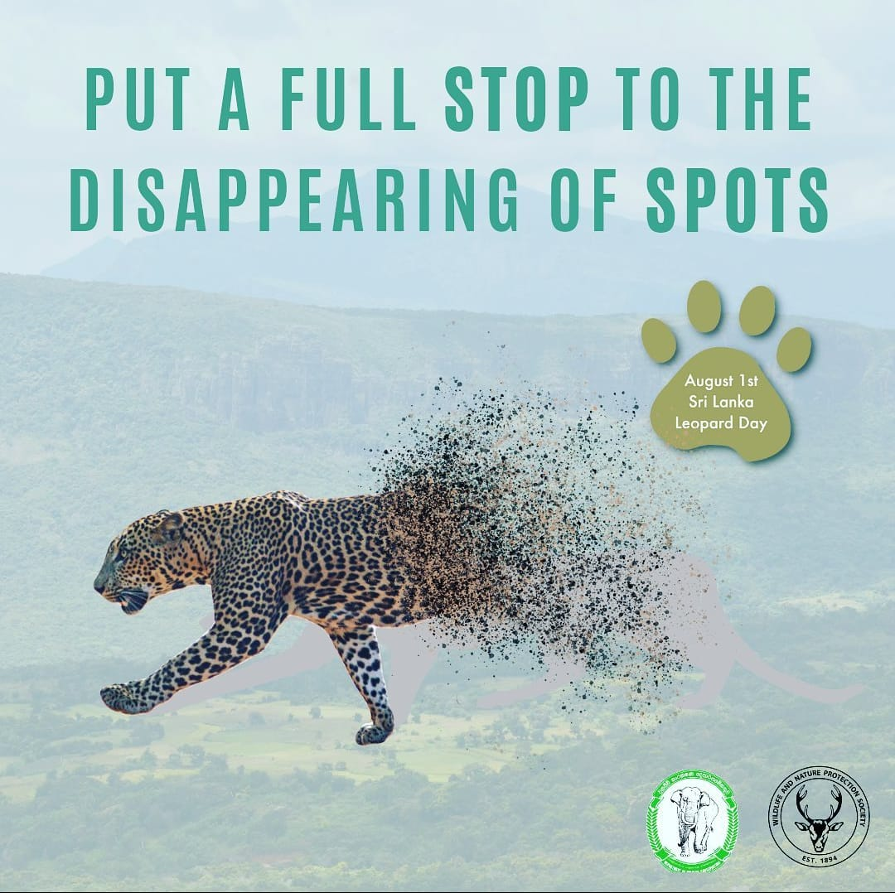
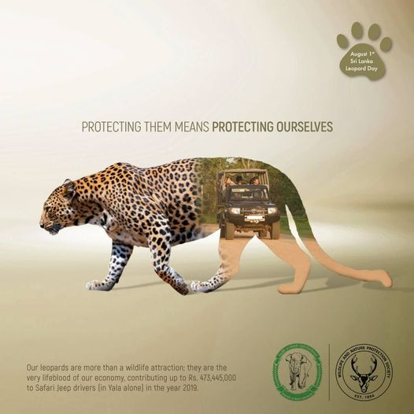

Where can Leopards be found in Sri Lanka?
The best renowned places to see leopards in their native habitat in Sri Lanka are, of course, Yala National Park and Wilpattu National Park. While leopards can be found in a variety of habitats around the country, they are now more concentrated in areas where conservation is most prevalent. They are mostly nocturnal creatures, however they can also be seen in the early morning or late evening. As previously said, they are normally solitary, gliding through the bush, but during mating season, they hunt in pairs, and if a mother has cubs, she can be seen walking around with them in tow.
how can you help?
yes YOU!
Individuals can support leopard conservation efforts in Sri Lanka in a variety of ways. Conservation is a community responsibility, yet individual efforts can have a major impact. Here are several ways people can help:
Support Conservation Organizations
Contribute to and assist recognized animal conservation groups in Sri Lanka that specialize in leopard conservation. These groups frequently undertake research, implement conservation programs, and work to preserve leopard habitats.
Educate Others
Increase awareness of the importance of leopard conservation. Educate friends, family, and community members about the risks leopards face and the need of protecting their habitat.
Responsible Wildlife Tourism
When visiting national parks or wildlife reserves, please practice responsible wildlife tourism. To avoid disturbance to leopards and other animals on safaris, adhere to ethical norms, keep a respectful distance from wildlife, and follow park restrictions.
Donate and Volunteer
Contribute your time or money to wildlife conservation organizations. Volunteer activities and donations can directly benefit on-the-ground conservation initiatives.
Threats faced by Leopards in Sri Lanka
Decline and Disintegration of Habitats
Sri Lankan leopards face considerable habitat loss and fragmentation, which are mostly caused by deforestation, urbanization, and agricultural activities. The modification of natural landscapes for human use degrades and isolates leopard habitats, limiting their ability to travel freely and find suitable prey.
Consequences
The impacts of habitat loss and fragmentation are significant. As leopard habitats diminish, the likelihood of human-leopard conflict rises, as these large animals frequently venture into inhabited areas in search of food. Leopard populations are declining due to diminished prey supply, genetic isolation, and limited living space. This threatens the ecological balance and long-term survival of these iconic species.
Actions taken to avoid the threat
Conservation efforts aim to mitigate habitat loss and fragmentation through a variety of techniques. Protected areas must be established and managed effectively in order to preserve key leopard habitats. Habitat restoration initiatives seek to restore degraded landscapes, whereas wildlife corridors assist connect isolated places, allowing leopards to migrate between habitats. Collaborative activities with local populations, strong conservation rules, and sustainable land-use planning all help to reduce the impact of habitat loss and fragmentation on Sri Lankan leopards.
Human-Wildlife conflict
Human-wildlife conflict is a major worry for Sri Lankan leopards, as human populations expand into their natural habitats, resulting in clashes that imperil both communities and these large cats. Leopard encounters frequently result in cattle depredation, which leads to retaliatory deaths and unfavorable views among local residents.
Consequences
The repercussions of human-wildlife conflict are serious, including leopard deaths, strained relationships between communities and leopards, and possible hazards to human safety. Retaliatory killings worsen leopard populations' problems, resulting in a cycle of conflict that jeopardizes human-leopard cohabitation.
Actions taken to avoid the threat
Conservation efforts use a variety of techniques to reduce conflicts between humans and wildlife. Livestock security methods, such as safe fences and guard animals, are used to reduce conflicts and protect local populations' livelihoods. Education and awareness programs are critical in building understanding and tolerance, highlighting the value of coexistence. Early warning systems are used to advise communities about leopard movements, allowing for precautionary measures. The construction of community-managed conservation areas allows local communities to actively participate in leopard conservation, promoting a balanced approach that benefits both people and leopards.
